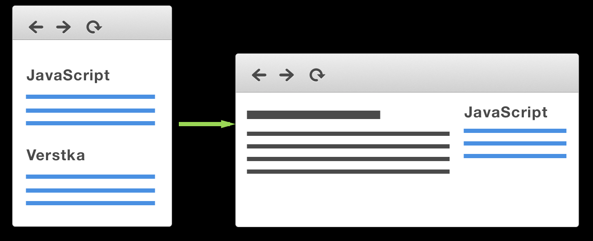
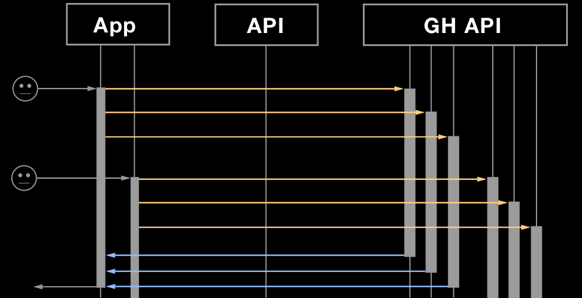
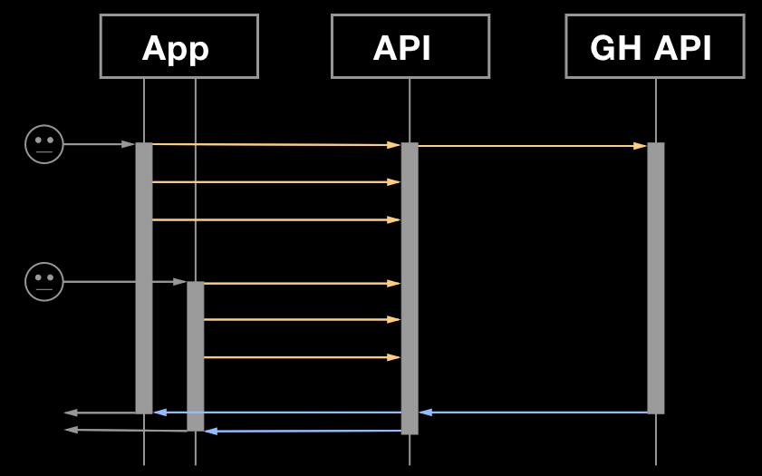
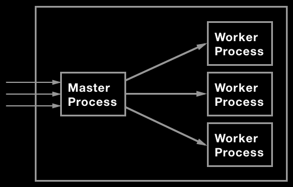
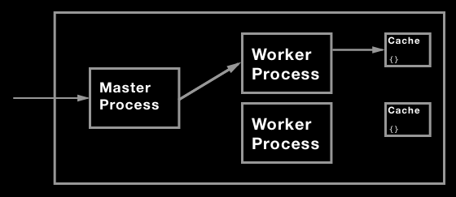
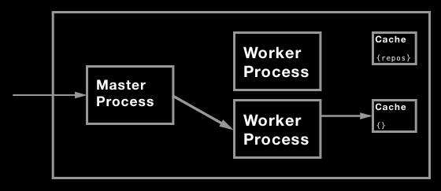
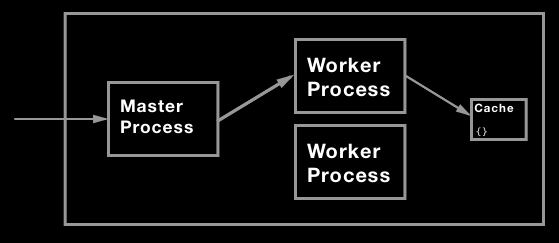
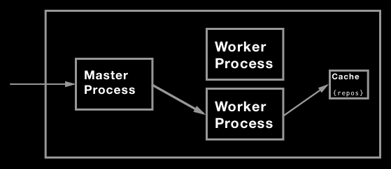

function getTasks(category) {
return github.getRepos('urfu-2015')
.then(tasks => filterTasks(tasks, category))
.then(getTasksInfo);
};
Promise
.all([
getTasks('javascript'),
getTasks('verstka'),
getTasks('webdev')
])
.then(results => {
res.render(...);
});
Promise
.all([
getTasks('javascript'),
getTasks('verstka'),
getTasks('webdev')
]);
function getTasks(category) {
return github.getRepos('urfu-2015')
.then(...)
.then(...);
};
require('debug-http')();
GET https://api.github.com/orgs/urfu-2015/repos 891ms
GET https://api.github.com/orgs/urfu-2015/repos 889ms
GET https://api.github.com/orgs/urfu-2015/repos 902ms
GET https://api.github.com/orgs/urfu-2015/repos 933ms
GET https://api.github.com/orgs/urfu-2015/repos 953ms
GET https://api.github.com/orgs/urfu-2015/repos 1,003ms
GET https://api.github.com/orgs/urfu-2015/repos 1,018ms
GET https://api.github.com/orgs/urfu-2015/repos 1,067ms
GET https://api.github.com/orgs/urfu-2015/repos 1,072ms
Много одинаковых запросов


let currentQuery;
function getReposBatch() {
if (!currentQuery) {
currentQuery = github.getRepos('urfu-2015')
.finally(() => {
currentQuery = null;
});
}
return currentQuery;
}
function getTasks(category) {
return getReposBatch()
.then(tasks => filterTasks(tasks, category))
.then(getTasksInfo);
};
Hit Rate = Попадание в кэш / Количество запросов
const cache = new Map();
function memoize(key, fn) {
if (!cache.has(key)) {
const value = fn();
cache.set(key, value);
return value;
}
return cache.get(key);
}
const LRU = require('lru-cache');
const cache = new LRU();
cache.set(key, value, maxAge);cache.get(key);cache.del(key);cache.has(key);
class Cache {
constructor() {
this._cache = new LRU();
}
memoize(key, maxAge, fn) {
// ...
}
}
memoize(key, maxAge, fn) {
const cache = this._cache;
const value = cache.get(key);
if (value) {
return Promise.resolve(value);
}
return Promise.resolve()
.then(fn)
.then(result => {
cache.set(key, result, maxAge * 1000);
return result;
});
}
function getTasks(category) {
return getReposBatch()
.then(tasks => filterTasks(tasks, category))
.then(getTasksInfo);
};
const cache = new Cache();
function getTasksCached(category) {
const cacheKey = `tasks.${category}`;
return cache.memoize(
cacheKey,
5 * 60,
() => getTasks(category)
);
}
GET https://api.github.com/orgs/urfu-2015/repos 990ms
GET / 200 1249.771 ms
GET / 200 1254.626 ms
GET / 200 1236.532 ms
GET / 200 11.003 ms
GET / 200 18.849 ms
GET / 200 25.639 ms

Round-robin алгоритм балансировки
const cluster = require('cluster');
const os = require('os');
if (cluster.isMaster) {
const cpus = os.cpus().length;
for (let i = 0; i < cpus; i++) {
cluster.fork();
}
} else {
require('./app.js');
}
Availability: 10.89 %
Successful transactions: 61
Failed transactions: 499
if (cluster.isMaster) {
// ...
cluster.on('exit', (worker, code) => {
if (code !== 0
&& !worker.exitedAfterDisconnect) {
console.log('Worker crashed');
cluster.fork();
}
});
}
Availability: 87.10 %
Successful transactions: 243
Failed transactions: 36




Shared cache
docker pull redis
docker run --name d-redis -p 6379:6379 -d --rm redis redis-server
telnet localhost 6379
docker run -it --link d-redis:redis --rm redis redis-cli -h redis -p 6379
SET tasks.javascript "[{ name: ... }]"
EXISTS tasks.javascript
GET tasks.javascript
DEL tasks.javascript
EXPIRE tasks.javascript 30
TTL tasks.javascript
SETEX tasks.javascript 30 "[{ name: ... }]"
const Redis = require("ioredis");
class Cache {
constructor() {
this._cache = new Redis(6379, '127.0.0.1');
}
}
memoize(key, maxAge, fn) {
const cache = this._cache;
const value = cache.get(key)
if (value) {
return Promise.resolve(value)
}
return Promise.resolve()
.then(fn)
.then(result => {
cache.set(key, result, maxAge * 1000)
return result;
}
}
memoize(key, maxAge, fn) {
const cache = this._cache;
return cache.get(key)
.then(value => {
if (value) {
return JSON.parse(value);
}
return Promise.resolve()
.then(fn)
.then(result => {
cache.setex(key, maxAge, JSON.stringify(result));
return result;
});
});
}